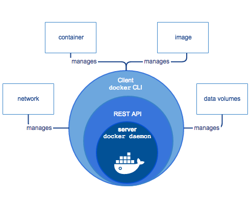

What is Docker?
What is the Docker platform?
Encapsulate your applications (and supporting components) into Docker containers
Distribute and ship those containers to your teams for further development and testing
Deploy those applications to your production environment, whether it is in a local data center or the Cloud
What is Docker Engine?

What can I use Docker for?
Fast, consistent delivery of your applications
Responsive deployment and scaling
Running more workloads on the same hardware
What is Docker’s architecture?

How does a Docker image work?
FROM ubuntu
LABEL Description="Img for foobar executetable" Vendor="ACME Products" Version="1.0"
RUN apt-get update && apt-get install -y inotify-tools nginx apache2 openssh-server
ADD hom* /mydir/
ENV myCat fluffy
CMD echo "This is a test."
How does a Docker registry work?
How does a container work?
WHAT HAPPENS WHEN YOU RUN A CONTAINER?
docker run -i -t ubuntu /bin/bash
- Pulls the ubuntu image
- Creates a new container
- Allocates a filesystem and mounts a read-write layer
- Allocates a network / bridge interface
- Sets up an IP address:
- Executes a process that you specify
- Captures and provides application output
Docker vs VM

Disadvantages
- Not right for all tasks
- Grappling with dependencies
- Weaker isolation
- Limited tools